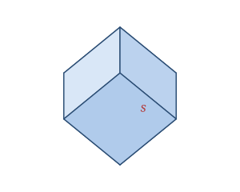

A cube is a solid bounded by six identical square faces that meet at right angles. Every edge has the same length, and every corner is a right angle, which makes it the most symmetric of the six-faced solids (a regular hexahedron). It is one of the five Platonic solids.
Cubes are everywhere in daily life: gaming dice, sugar cubes, Rubik's cubes, cardboard boxes that happen to be square, and the building blocks children stack are all cubes or very close to it.
The cube is defined by a single measurement — its side length s.
| Faces | 6 (all squares) |
|---|---|
| Edges | 12 |
| Vertices | 8 |
| Side length | s |
As a polyhedron it satisfies Euler's formula: V − E + F = 8 − 12 + 6 = 2.
Volume V = s³
Surface area SA = 6s²
Face diagonal d = s√2
Space diagonal D = s√3
Take a cube with side s = 4.
V = s³ = 4³ = 64
SA = 6s² = 6 × 4² = 6 × 16 = 96
Face diagonal = s√2 = 4√2 ≈ 5.66
Space diagonal = s√3 = 4√3 ≈ 6.93
The cube is the only Platonic solid that tiles 3D space perfectly with no gaps — which is exactly why bricks, shipping containers, and warehouse shelving are all built on cuboid grids.